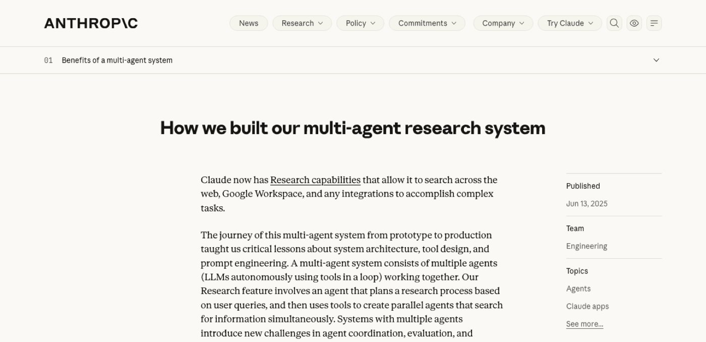
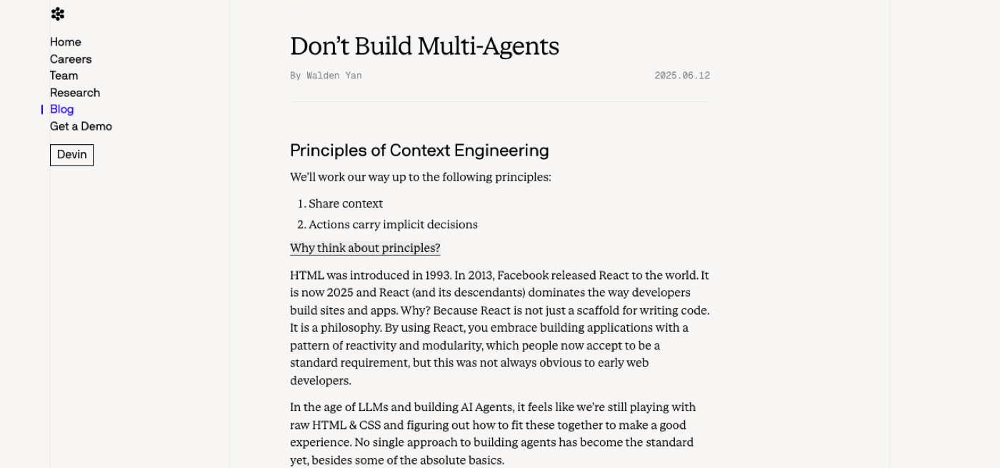
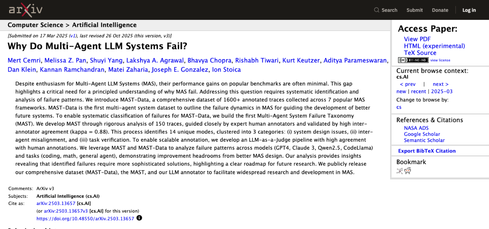
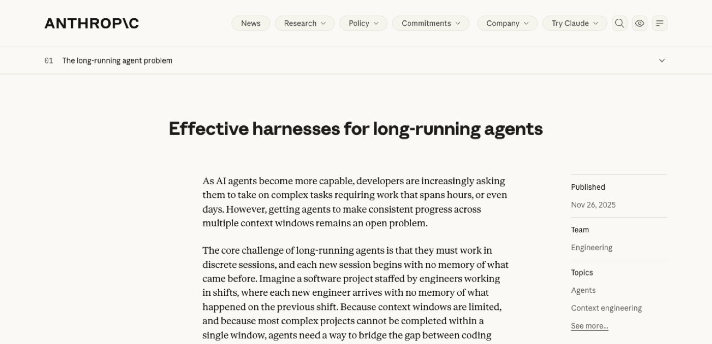
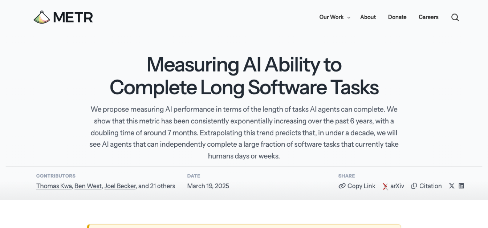

Week 7: More agents, more autonomy, more ways to fail
Before class
- Watch 7.1 Multi-agent systems and when not to build them, 7.2 Long-running, coding and computer-use agents and 7.3 What the benchmarks say about the limits. The quiz at the start of class has five questions on them.
- Read Anthropic, How we built our multi-agent research system, and Cemri et al., Why do multi-agent LLM systems fail?. Note which of the fourteen failure modes you have seen in your own traces.
- Bring your service in a state another team can run without you: the endpoint or the Fleet agent, the golden set with expected outputs, the trace view, and the draft decision memo. Another team reviews it tonight.
Tonight
| 5:30 | Quiz on the videos, then the last trace of the week, then the ideas below, with the room. |
| 6:10 | Lab 7, Clinic. Two paths, one output sheet. |
| 7:50 | Break. |
| 8:05 | Studio. The final build and the final report. I sit with two teams at a time. |
| 9:15 | Synthesis, the draw for presentation order, and what to do before week 8. |
Two shapes, and when a second agent pays off
Multi-agent systems have two main shapes. An orchestrator with workers: one lead agent breaks the job up, sends pieces to worker agents, each with its own context, and assembles the results. A handoff chain: the task moves from one specialized agent to the next, triage to expert to closer, each with its own instructions and tools. Both exist because one context window cannot hold everything, and because specialized instructions beat one giant prompt. Both also multiply the ways things go wrong.
In June 2025 Anthropic described its research system: a lead agent that plans and spawns sub-agents to search in parallel, each with a fresh context (How we built our multi-agent research system). On their internal research evaluation it beat a single agent using the same top model by about 90 percent. It used roughly fifteen times the tokens of a chat. Their own conclusion was that the pattern pays off when the task is wide, parallel and valuable enough. That describes open-ended research and few capstone services.

One day earlier Cognition, which builds the Devin coding agent, had argued against multi-agent systems for work that produces one coherent thing, such as a codebase or a document (Don't build multi-agents). Sub-agents that each see part of the context make decisions that conflict, and the conflicts are plausible enough to slip through. Their two principles: share the full context, including the history of decisions, and remember that every action carries an implicit decision the next agent needs to know about. Search parallelises and construction does not, so ask which your service does.

Ask the room: is your service's work parallel, like search, or one artifact, like a report? What would a second agent not see?
How multi-agent systems fail
A Berkeley team catalogued how multi-agent systems fail in a paper first posted in March 2025 (Why do multi-agent LLM systems fail?). They read 150 traces from seven popular frameworks, with expert annotators, and found fourteen failure modes in three groups. Specification and design: unclear roles, missing stop conditions, violated task specifications. Inter-agent misalignment: agents ignoring each other, withholding information, talking past each other. Task verification: agents declaring work done without checking it. Most failures were design failures, the same lesson as week 4 with more agents in the trace.

Before your team adds a second agent, ask whether a workflow step would do, whether the work is parallel or one artifact, what each agent sees and who holds the record of decisions, how you will evaluate the whole and each part with the golden set you have, and what it costs per task against the single agent you have now. For most capstone projects the honest answer is one agent with good tools, and tonight each team gives its own answer in two sentences.
Agents that run for hours, write code and use a computer
A task that takes a model hours or days cannot fit one context window, so the work is split into sessions, and each session starts with no memory of the last one. Anthropic's November 2025 write-up is the model to copy (Effective harnesses for long-running agents). Continuity lives in the harness: a progress file the agent reads first and updates last, a task list with items marked done, a clean checkpoint at the end of each session, and tests that define what done means, so the agent cannot simply declare victory. All of it is week 1's harness and week 4's evaluation at a longer time scale.

Coding agents are agents whose tools are a file system, a shell and a test runner. They work unusually well for two reasons. Code has tests, so the agent can check its own work. Errors are cheap inside a sandbox, and version control undoes mistakes. Most business domains have neither: there is no test suite for a customer email and no undo for a payment.
Computer-use agents look at the screen, move the mouse and type. They matter because much organisational work happens in systems with no API: legacy applications and vendor portals. They are slow and expensive, since every step costs a screenshot's worth of tokens, and every screen is untrusted content, so the lethal trifecta applies in full. Pass rates on long tasks are still well below human, and improving. For a capstone, a computer-use step belongs behind an approval gate, if it belongs at all.
Ask the room: in your domain, what plays the role of the test, and what plays the role of the undo? If neither exists, which autonomy position is left?
What the benchmarks say about the limits
In March 2025 METR published a better measure of agent capability than a score: the length of a task, measured in how long it takes a skilled human, that an agent can complete with 50 percent reliability (Measuring AI ability to complete long software tasks). They found that length doubling roughly every seven months since 2019, with signs of a faster pace in the most recent models. Read the fine print. These are software tasks, at 50 percent reliability, and the trend line is a forecast, which can be wrong.

Benchmarks make three kinds of claim.
| Kind | What it measures | What the scores do |
|---|---|---|
| Tasks with tests | Software, maths, puzzles. A program checks the answer. | Climb fastest. The numbers in launch announcements. |
| Expert-graded work | GDPval: real work products, graded blind by professionals. | Near parity, on tasks that arrive fully specified. |
| Interactive tasks | τ-bench: a simulated user, real tools, rules to follow. | Lowest. Closest to your project. |
You met GDPx in week 4: partner firms wrote 206 tasks from their own work and graded the results, and the models ran with their own harnesses. The best score in November 2026 was about 16 percent, against near parity on GDPval. GDPval hands the model a complete brief and all the files. GDPx tasks look more like a job: messy inputs, judgment calls, things the brief did not say.
Five questions for any benchmark claim, your own memo's included:
- Who wrote the tasks, and who graded them?
- Is the score from one run, or pass^k?
- Did the task arrive fully specified, or did the agent have to find things out?
- Which harness was used, and could the model have seen the test during training?
- What would this task look like inside your organization, with your data, your systems and your users?
Designing for failure
Start with the stop conditions. A missing stop condition is on the Berkeley list, and an agent that may not declare victory needs something else to end it. Every loop in your service needs a step budget, a cost budget per task, and a definition of done that a test or a calibrated judge can check. An orchestrator pays for every worker and a computer-use step pays a screenshot per action, so budget the whole system and each part. When a budget fires, the agent stops and reports how far it got.
Then the gates. If a worker can call a write tool, the approval gate belongs in front of the worker, and the lead agent has to know it is there. In a handoff chain the closer usually writes, so the gate goes there, and triage should not reach the write tool at all. The Replit case from week 1 is the picture to keep: a write tool with no gate in front of it.
Last, a trace someone reads. The operations sheet names the owner and says which traces that person reads: a budget that fired, a gate refused, a case that failed twice.
The frontier moves the scale of each question without changing the questions, so next week's panel asks the same four you heard in the first video.
- What tools may the loop call?
- What is it allowed to touch?
- How do we know it did the right thing, reliably, and not once in a demo?
- What does it cost, in money and in people's time, to find out?
Ask the room: in tonight's trace, which stop condition fired, and which should have?
Trace of the week
The last team presents tonight: ten minutes, the actual trace, never slides. Look for a stop condition that fired, or should have: a step budget reached, a gate that paused a write, a loop that declared itself done without checking, or a run that ended only because someone closed it.
Lab 7: Clinic
Goal: review another team's service as the panel will, from their golden set, traces and memo, and leave with the three fixes that matter most for your own. Starter files are posted on iCollege before class. Teams are paired, with one output sheet per team at 7:50. The rubric is the project page's six requirements and the four questions above.
Code path
- Open their package: endpoint, repository, golden set with expected outputs, LangSmith traces, draft decision memo. Check the six requirements, with evidence, before running anything.
- Run five of their golden-set cases against their endpoint, three reported passing and two failing. Record pass or fail against their expected outputs, and note every difference from their report.
- Read three traces from the top: one pass, one fail, one with a write tool call. Note what was called, where a stop condition or gate fired, and any memo claim the trace does not support.
- Write the one-page review: each requirement met or not, with evidence, then the three fixes that matter most, in order. Swap reviews and write your own fix list and multi-agent verdict.
No-code path
- Open their package: the Fleet agent, called through their bridge application or at their machine, golden set with expected outputs, LangSmith traces, draft decision memo. Check the six requirements, with evidence, before running anything.
- Run five of their golden-set cases, three reported passing and two failing. Record pass or fail against their expected outputs, and note every difference from their report.
- Open three runs in the trace view: one pass, one fail, one that called a tool set to require approval. Note what was called, whether the approval paused the run, and any memo claim the run does not support.
- Write the one-page review: each requirement met or not, with evidence, then the three fixes that matter most, in order. Swap reviews and write your own fix list and multi-agent verdict.
Output sheet, one page per team:
- The peer review: each of the six requirements met or not, with evidence, and the three fixes that matter most.
- The multi-agent verdict for your own service: one agent or several, two sentences, with tonight's evidence.
- Your own fix list for the final build, from the review you received, in order.
Studio: the final build and the final report
Both are due before week 8. The panel reads the report before you present, so it has to stand without the demo. Its headings are the project's deliverables, with the numbers rerun after tonight's fixes.
- The served agent: the endpoint or the Fleet agent, its tools with their limits, and the autonomy position per action.
- The evaluation report: the golden set of at least twenty cases, pass^k from the latest regression run, the error analysis, and the calibrated judge.
- The security review: the injection surface, the lethal-trifecta check, the approval gates, and what the logs would show after an incident.
- The operations sheet: cost per task and per successful task, latency, what breaks, and who is responsible when it does.
- The decision memo: two pages for an executive. Deploy, extend the pilot, or stop, with the numbers behind the recommendation.
- The AI-use disclosure: which coding agents and assistants the team used, for what, and what the oral trace check covered.
When I sit with your team I will ask what the peer review found that you had not seen, what changed in pass^k after your last fix, and what the panel will ask that you cannot yet answer.
Synthesis
- A second agent pays off when the work is wide, parallel and valuable enough to cover many times the tokens. One artifact wants one agent with the full context.
- Most multi-agent failures are design failures: unclear roles, missing stop conditions, work declared done without checking. The fix is the harness and the error analysis you already know.
- Long-running, coding and computer-use agents raise the scale of every question in the course without changing the questions. Ask what stands in for the test and the undo in your domain.
- Benchmarks make three kinds of claim. Ask who wrote and graded the tasks, one run or pass^k, fully specified or not, and which harness.
Before week 8: no new videos. Submit the final build and the final report with tonight's fixes and the rerun numbers. Week 8 is the final presentations: ten minutes per team, in the order drawn tonight. The panel plays the buyer, has read your memo, and asks the four questions, with the trace behind any number you give. Every team scores every other team. The individual reflection, with the AI-use disclosure, is due after the session, one page per person.
Sources
- Anthropic, How we built our multi-agent research system, June 13, 2025.
- Cognition, Don't build multi-agents, June 12, 2025.
- Cemri et al., Why do multi-agent LLM systems fail?, arXiv, March 2025.
- Anthropic, Effective harnesses for long-running agents, November 26, 2025.
- METR, Measuring AI ability to complete long software tasks, March 19, 2025.
- OpenAI, GDPval: Evaluating AI model performance on real-world economically valuable tasks, September 2025.
- Yao et al., τ-bench: A benchmark for tool-agent-user interaction in real-world domains, arXiv, June 2024.
- SemiAnalysis, GDPx, November 2026.